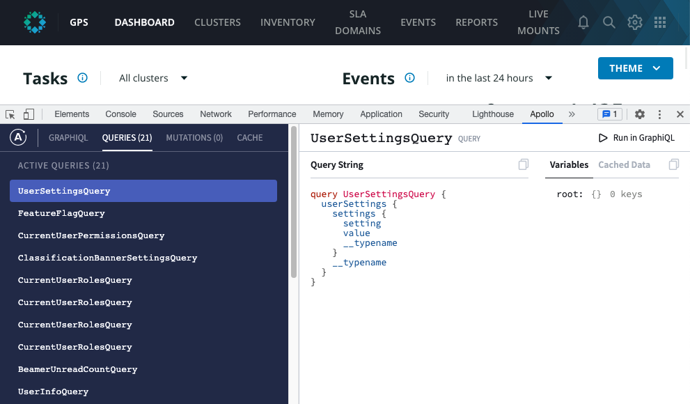
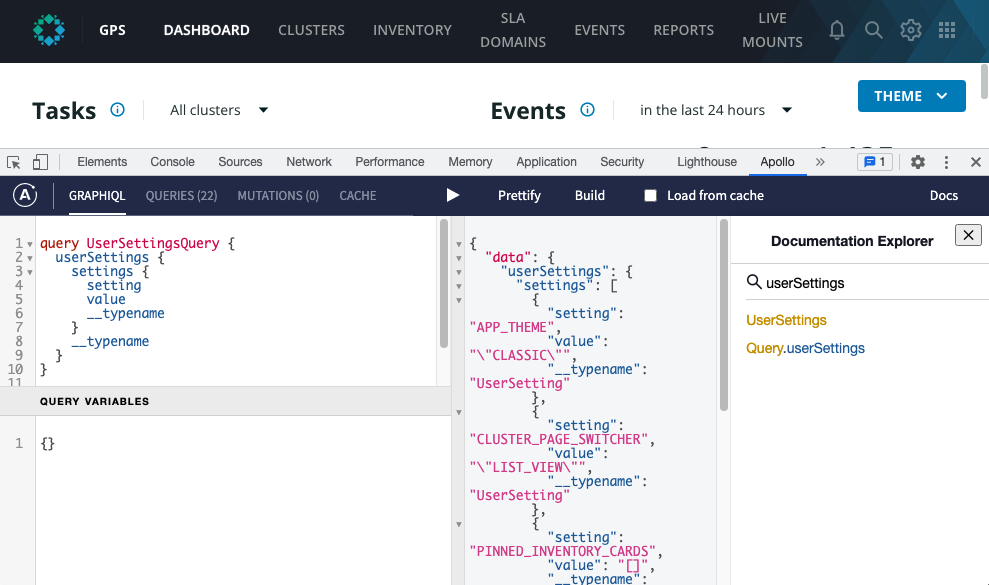

GraphQL Playground
Running sample queries against Rubrik GraphQL API is an essential part of building and debugging integration code. A number of tools are available that facilitate query execution and schema exploration. One such tool is Apollo Client Devtools Chrome extension.
- Download the extension and add it to Chrome.
- Log in to the Rubrik application.
- Open Developer Tools.
- Find Apollo tab (Elements, Console, Sources, ..., Apollo).

On the left, there is a list of all queries executed by the current page. Select a query and click Run in GraphiQL.

GraphiQL allows you to execute arbitrary queries, aiding query authoring with code completion. Docs button in the top, right corner opens a Documentation Explorer, allowing for easy schema exploration.
Warning
Any mutation issued through Apollo client will result in the modification of real data in your account. Be careful when experimenting with mutations!